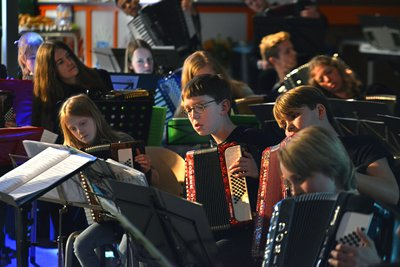
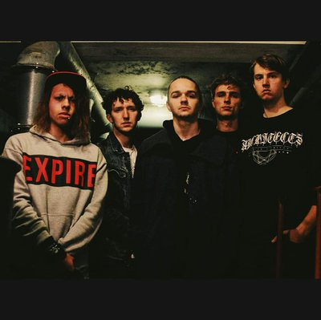

woensdag
14:00-17:00
NJAO
Een afvaardiging van de leukste en meest enthousiaste jeugd van Nederland die accordeon speelt, zal ons aan de lange tafel in de Spiegelzaal hun wereldse kost serveren terwijl we in de rij staan voor de kassa. Het repertoire is zéér veelzijdig, van klassiek tot pop, van film muziek tot Argentijnse tango. Het orkest won vele internationale prijzen in haar reeds 20-jarig bestaan en bewijst dat het accordeon verre van oubollig is.


vrijdag
17:00-18:00
De Likt
De Likt uit Rotterdam is een echte live-sensatie. Met hun brute electrorap slingeren ze de ene na de andere beuker de zaal in, of hun frontman zelf, want die houdt nogal van sky-diven. In een ouderwetse bolletjesjurk ramt hij de nummers erin, maar al gauw gaat die uit, want het wordt te heet onder die jurk. In een rood onderbroekje kun je trouwens veel beter van hot naar her springen. Het is net alsof er GoGo Gadnet-veren onder zijn schoenen zitten. Denk aan De Jeugd van Tegenwoordig maar dan maniakaal, heerlijk Rotterdams! Zonder twijfel gaat De Likt met botte tanden de Willem in Twee breken...
vrijdag
19:00-19:45
Omiri
Maak kennis met één van de meest frisse en originele nieuwe acts uit de muzikale onderbuik van Lissabon. Een bevreemdende, opzwepende one-man show op ukelele, bouzouki, mandoline, nyckelharpa en Portugese doedelzak. In de rug gedekt door knotsgekke visuals van bewerkte Portugese oude besjes en allerlei volksmuzikanten die haperende electro beats vormen en daarmee een brede lach op je gezicht toveren.

vrijdag
20:40-21:25
Take No Prisoners
TAKE NO PRISONERS heeft in korte tijd een grote indruk achtergelaten bij de fans! De muziek van dit vijftal kan het best beschreven worden als melodische hardcore, met invloeden uit zowel Emo als Youth Crew Hardcore. Ieder optreden vlamt en de aandacht wordt constant opgeëist.
vrijdag
22:15-23:15
Altin Gün
Altın Gün laat zich inspireren door het Turkse geluid uit de jaren ’70. De tijd dat artiesten zoals Selda Bağcan, Barış Manço en Erkin Koray traditionele muziek samensmolten met Westerse rockinvloeden. Bandleden van Jacco Gardner en Jungle By Night waren zo gefascineerd door dit geluid, dat ze op zoek gingen naar Turkse muzikanten. Daar kwamen Merve Dasdemir en Erdinc Yildiz Ecevit om de hoek kijken. Ze spelen liedjes van de eerder genoemde kunstenaars uit de jaren ’70, maar ook minder bekende tijdgenoten. Daarnaast maken ze hun eigen versies van traditionele Turkse muziek. Zo komen verschillende werelden samen tot een verfrissend en dansbaar geluid!
vrijdag
00:00-01:00
Dr. Meaker
In Nederland zijn er maar weinig tot geen live drum 'n bass bands te vinden. Daarvoor zijn we dus maar gaan rondneuzen in dé DnB stad van Europa: Bristol. Al gauw stuitten we daar op Dr. Meaker. Deze band is daar rete hot, wordt wekelijks gedraaid op radio 1 van de BBC en won zelfs een prijs voor Urban Music. Verwacht stampende beats met soulvolle zangeressen en koperblazers. Tijdens RAUWKOST maken ze hun debuut in Nederland met maar één boodschap: live drum 'n bass is cool!
vrijdag
02:00-03:00